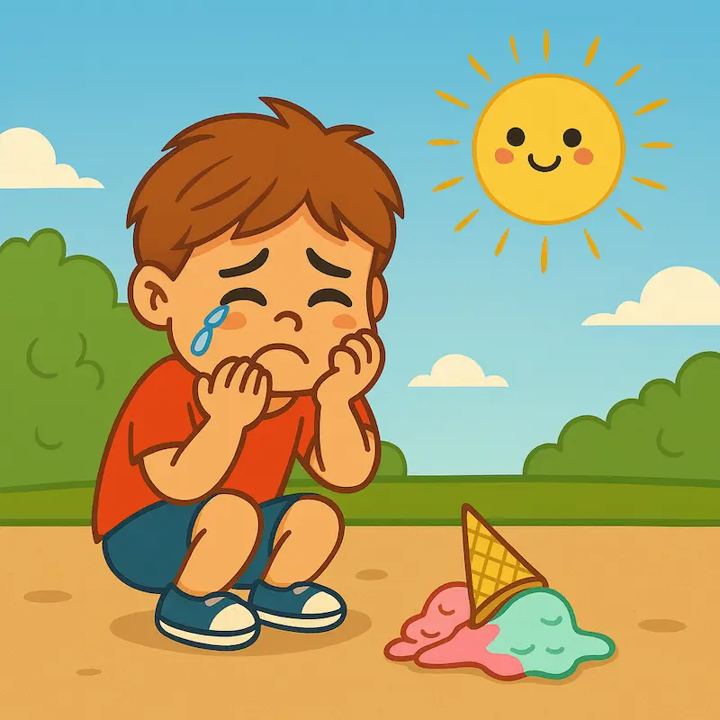

AKUT IS-KRISE!
Når isen rammer jorden, og tårerne truer med at oversvømme hele legepladsen, er det NU, du skal handle! På denne side finder du en helt uundværlig guide til alle forældre, der nogensinde har stået i den ultimative børne-nødsituation: Den Tabte Is.
Se mere